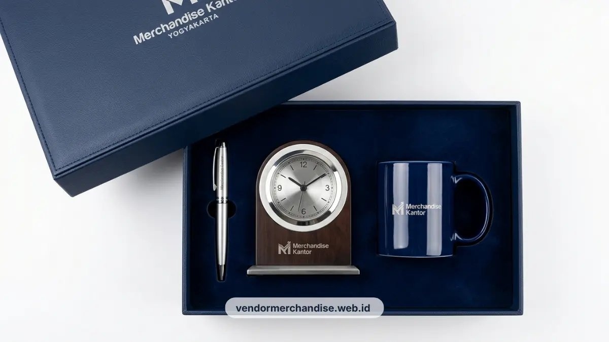

Jam meja custom logo perusahaan tersedia dalam berbagai material dan gaya desain, cocok sebagai gift eksekutif untuk klien maupun mitra bisnis di Yogyakarta.
Kenapa Jam Meja Cocok untuk Gift Eksekutif dan Klien Korporat
Jam meja cocok dijadikan gift eksekutif karena termasuk item fungsional yang digunakan setiap hari dan tetap terlihat di meja kerja klien dalam jangka waktu lama.
Berbeda dengan merchandise yang cepat habis atau berpindah tempat, jam meja umumnya diletakkan di satu titik tetap seperti meja kerja atau meja resepsionis. Pilihan produk berkelas ini melengkapi koleksi executive gift premium direksi dan klien untuk memperkuat citra profesional brand.
Posisi ini membuat logo perusahaan pada jam meja dapat dilihat berulang kali oleh klien, tamu, maupun rekan kerja lain. Penyiapan hadiah ini sangat pas diberikan bersamaan dengan corporate gift set premium relasi bisnis untuk menjaga hubungan kemitraan jangka panjang.
Karena sifatnya yang fungsional dan tahan lama, jam meja juga dianggap sebagai gift yang lebih berkelas dibandingkan merchandise sehari-hari, sehingga sering dipilih untuk gift kepada klien penting atau mitra bisnis strategis.
Material dan Gaya Desain Jam Meja Custom Logo
Material jam meja custom logo yang umum tersedia meliputi kayu, akrilik, dan metal, dengan gaya desain mulai dari minimalis hingga klasik.
Jam meja berbahan kayu memberikan kesan hangat dan cocok untuk ruang kerja bergaya natural atau kantor dengan tema kayu dan earth tone. Jam meja berbahan akrilik cenderung terlihat modern dan minimalis, cocok untuk kantor dengan konsep kerja kontemporer.
Sementara jam meja berbahan metal memberikan kesan elegan dan lebih formal, sering dipilih untuk gift kepada level manajemen atau klien korporat. Anda bisa melihat ragam opsi produk ini di katalog jam meja custom perusahaan Vendor Merchandise Kantor.
Pemilihan gaya desain sebaiknya disesuaikan dengan identitas brand perusahaan agar terlihat konsisten dengan merchandise lain seperti merchandise kantor eksklusif daily essentials.

Area Ideal Penempatan Logo pada Jam Meja Kantor
Area ideal penempatan logo pada jam meja umumnya berada di bagian bawah dial jam atau pada alas dasar jam agar tetap terlihat rapi dan proporsional.
Penempatan logo pada bagian dial biasanya digunakan untuk logo berukuran kecil yang tidak mengganggu keterbacaan angka jam. Sementara logo yang lebih besar atau mengandung tagline perusahaan biasanya ditempatkan pada bagian alas atau bingkai luar jam.
Pemilihan area ini penting untuk menjaga keseimbangan antara fungsi jam sebagai penunjuk waktu dan fungsi branding sebagai identitas perusahaan. Opsi teknik cetak ini tersedia melalui layanan custom logo Merchandise Kantor.
Kombinasi Jam Meja dengan Gift Set Korporat Lainnya
Jam meja dapat dikombinasikan dengan gift set korporat lain seperti alat tulis premium atau set cangkir keramik untuk melengkapi paket gift eksekutif.
Kombinasi ini sering dipilih untuk kebutuhan gift akhir tahun, ulang tahun perusahaan, atau penghargaan kepada klien dan mitra bisnis. Hadiah ini sangat cocok mendampingi welcome box karyawan baru eksklusif maupun paket penghargaan eksekutif lainnya.
Menggabungkan jam meja dengan item lain dalam satu paket kemasan juga memberi kesan gift yang lebih lengkap dan berkesan dibandingkan hanya mengirimkan satu item saja.

Pesan Jam Meja Custom Logo di Vendor Merchandise Kantor
Vendor Merchandise Kantor menyediakan jam meja custom logo dengan pilihan material dan gaya desain yang dapat disesuaikan untuk kebutuhan gift eksekutif perusahaan di Yogyakarta.
Hubungi tim kami sekarang melalui WhatsApp resmi kami atau halaman kontak kami untuk konsultasi desain dan penawaran harga jam meja custom logo perusahaan Anda.